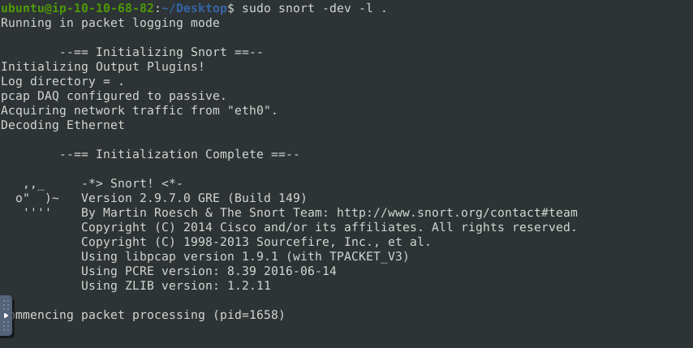
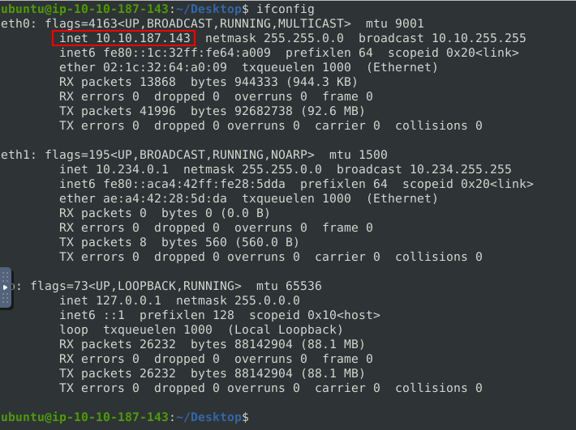
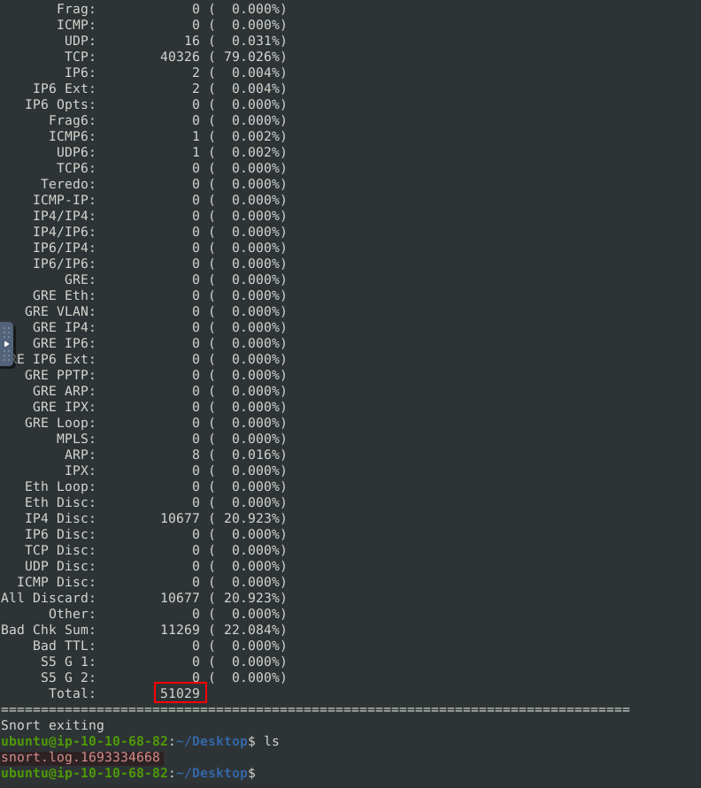
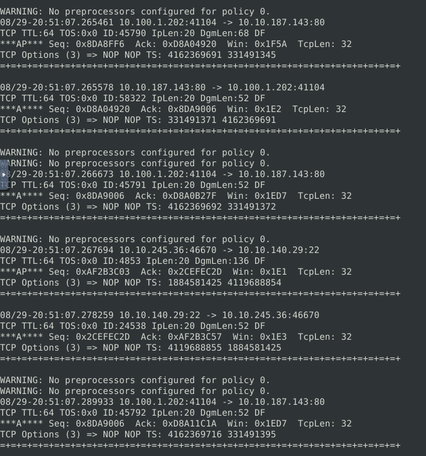
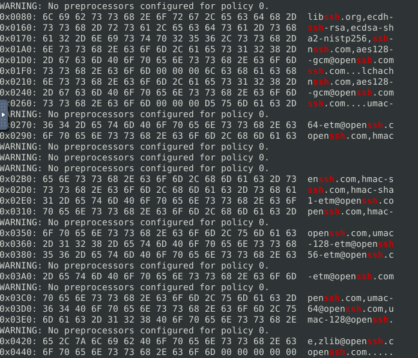
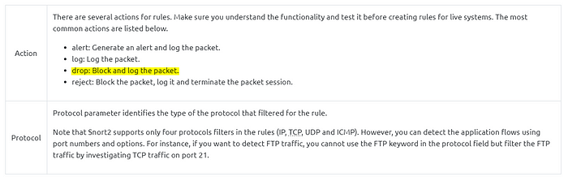
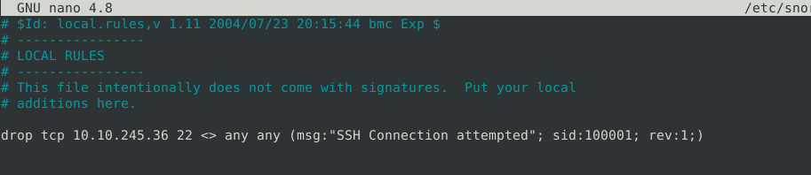
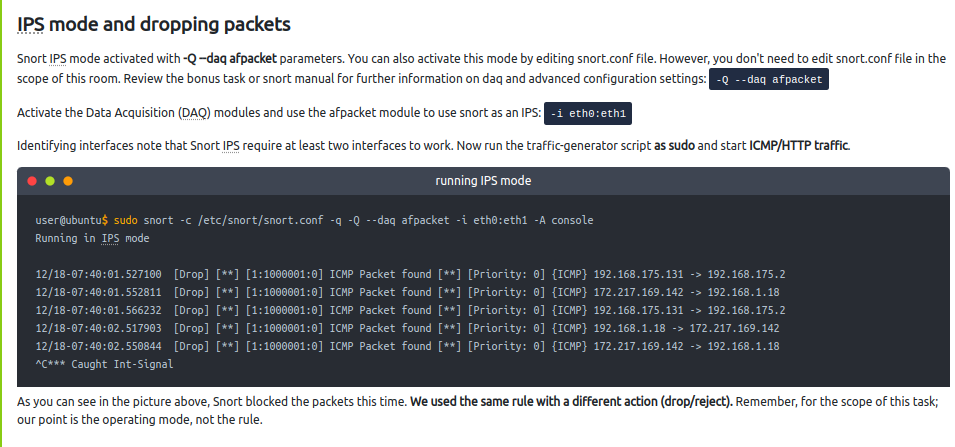

J&Y Enterprise is one of the top coffee retails in the world. They are known as tech-coffee shops and serve millions of coffee lover tech geeks and IT specialists every day.
They are famous for specific coffee recipes for the IT community and unique names for these products.
Their top five recipe names are;
WannaWhite , ZeroSleep , MacDown , BerryKeep and CryptoY .
J&Y's latest recipe, " Shot4J ", attracted great attention at the global coffee festival. J&Y officials promised that the product will hit the stores in the coming months.
The super-secret of this recipe is hidden in a digital safe. Attackers are after this recipe, and J&Y enterprises are having difficulties protecting their digital assets.
Last week, they received multiple attacks and decided to work with you to help them improve their security level and protect their recipe secrets.
This is your assistant J.A.V.A. (Just Another Virtual Assistant). She is an AI-driven virtual assistant and will help you notice possible anomalies. Hey, wait, something is happening...
[+] J.A.V.A.
Welcome, sir. I am sorry for the interruption. It is an emergency. Somebody is knocking on the door!
[+] YOU
Knocking on the door? What do you mean by "knocking on the door"?
[+] J.A.V.A.
We have a brute-force attack, sir.
[+] THE NARRATOR
This is not a comic book! Would you mind going and checking what's going on! Please...
[+] J.A.V.A .
Sir, you need to observe the traffic with Snort and identify the anomaly first. Then you can create a rule to stop the brute-force attack. GOOD LUCK!
We will start Snort in sniffer mode and try to figure out the attack source, service and port.
Then, write an IPS rule and run Snort in IPS mode to stop the brute-force attack.
Start Snort in sniffer mode
sudo snort -dev -l .

While Snort is capturing packets we will find our own IP Address with the command
ifconfig

Here we tell snort to start in logger mode "-dev" and save the logs "-l" on the directory "."
sudo snort -dev -l .

Once it's done, there will be a log file created by Snort that contains records of all the captured network packets and any associated alerts or intrusion detection information.
To inspect it's content, use the command
sudo snort -r snort.log.1693334668

Snort captured 5232 packets, there are two major patterns. First, is a connection from an IP Address inside our network to our computer and vise-versa. Second, two IP Adresses inside our network are sharing information with each other using port 22 (ssh)
Let's analyze the packets shared through the ssh protocol, port 22
sudo snort -r snort.log.1693342247 -X | grep "ssh"

This excerpt contains the SSH key exchange process during the initial stages of a connection. Eventough this is what ssh does, and a user could be a bit stuck. After more then one hundred tries, i think it's wise to make a Snort rule to dump packets comming from that IP Address “10.10.245.36” so let's make one.
First, we need to open the local.rules file in a text editor.
sudo nano /etc/snort/rules/local.rules

{kind=link}
Time to write our rule, to start it off we won’t be writing alert as we usually have. No, this time we will write "drop". Then from the packet we know it’s a "tcp" protocol. The next section is source IP address and port, we will put "10.10.245.36 22", as we want to specify the port. Followed by the "<>" directional arrows. For the destination IP address and port, we are going to put "any any". Now the second half of the rule, "msg: section I put "SSH Connection attempted"". To finish off the rule since we only have one, “sid: 100001”, and “rev: 1”.
drop tcp 10.10.245.36 22 <> any any
(msg:"SSH Connection attempted"; sid:100001; rev:1;)


By leveraging the information above we will, activate the rule we created and drop future malicious activity from “10.10.245.36” in port 22.
sudo snort -c /etc/snort/snort.conf -q -Q --daq afpacket -i eth0:eth1 -A full